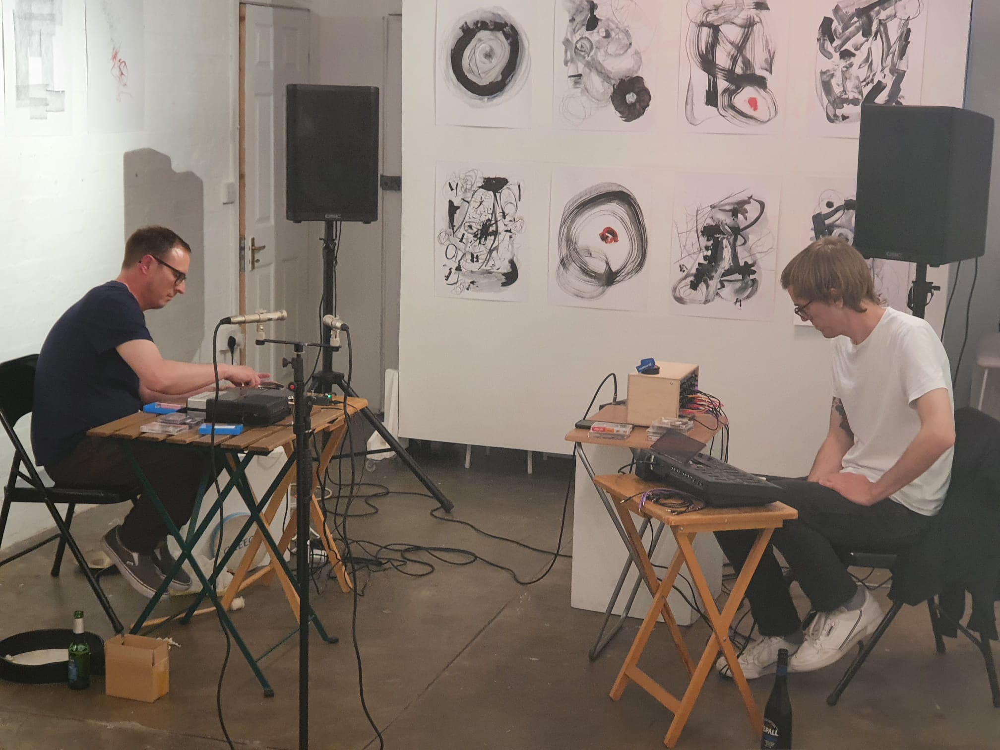
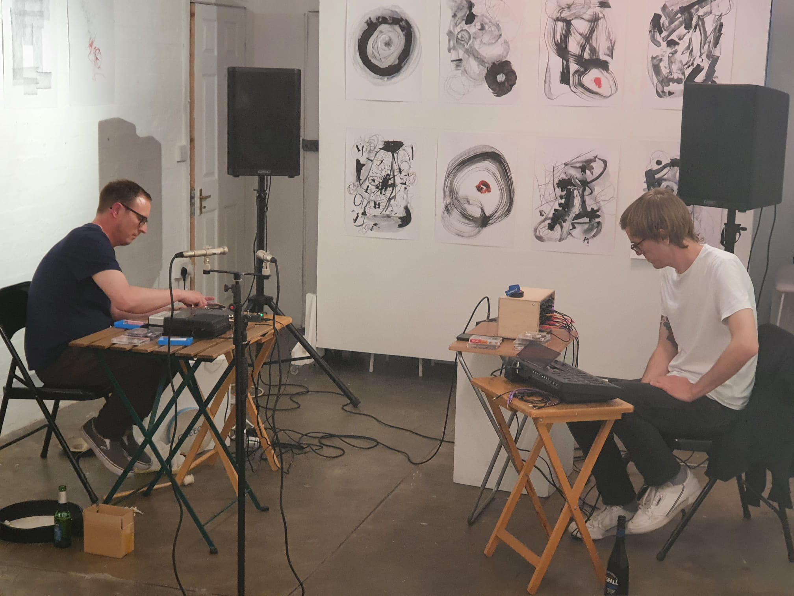

eolith
(matt atkins & phil maguire)
'eolith' is the result of a live collaborative performance between Phil Maguire and Matt Atkins that took part on the opening night of the latter's exhibition at Hundred Years Gallery in May '22. An exploration of texture, space, surface imperfections and liminal sound events, the performance is a perfect sonic counterpart to the visual work on show.
Matt Atkins - tapes, objects, percussion
Phil Maguire - tapes, synthesiser
Recorded by Phil Maguire at Hundred Years Gallery
18/05/22
Thanks to Graham Mackeachan and Hundred Years Gallery
available at bandcamp
 
